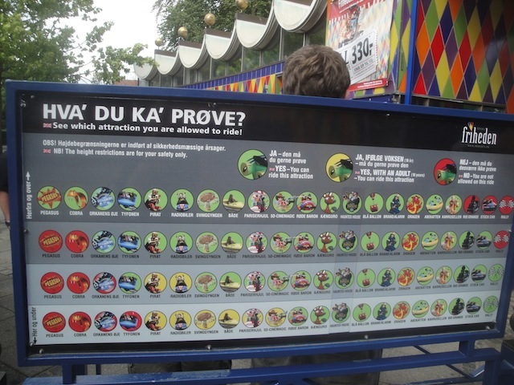
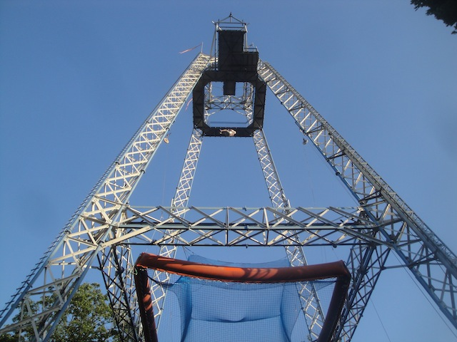

After all the awesomeness of Djurs Sommerland and riding a Mega-Lite, the fun continued on over to the small little park of Tivoli Friheden.
No need to worry everyone. This park doesn't have a Vekoma SLC. =)

Tivoli Friheden may not be nearly as cool as her sister in Copenhagen, but she's still a fun little park.
To make this place even better, we actually had Park ERT. It started out with just the coasters and the SCAD Tower, but it eventually grew to a good chunk of the rides opening up.
This ferris wheel however, was not among the open rides. Whatever.
The SCAD Tower is currently closed due to wind, but let's at least get out the inverted death machine by some Italian Manufacter who's name I forgot. =)
And when I say death machine, this one is a little more literal as this coaster did de-rail when it first opened (luckily nobody was seriously injured).
SCAD Tower's open? SCREW IT!!! RUN TOWARDS THE SCAD TOWER!!!
Sadly, the SCAD Tower broke right before I got on it (Why do rides break when I'm around?), so desperate to get on something, I moved over to the nearby Pinfari Looper.
Remember how I said I actually liked the one at Sommerland Sjaelland and that it wasn't as bad as people claimed? Well, this Pinfari Looper is awful and EXACTLY as bad as the horrible reviews other enthusiasts give these rides. =(
Here kitty kitty.
Sorry guys, but this has got to be the slowest and worst spinning mouse ever (with the obvious exception of the barely spinning mouse that SOMEHOW threw a man out at Mt. Olympus). It barely spun at all in the 2nd half. I think I counted 2 revolutions. How sad.
Don't worry about that a. It can be easily replaced.
Dinner may be starting, but I have to get out of line because...
THE SCAD TOWER'S OPEN AGAIN!!! EVERYTHING ELSE BE DAMNED!!! =)
Though it's technically called the Sky Tower, it's not important what it's called, as long as it does the job.
Have fun dude. =)
"I CHANGED MY MIND!!! MOMMY!!"
The elevator ride up is mildly annoying due to the fact that you have to hold the button all the way up, but who cares considering it's for a SCAD Tower!!
Don't worry. The net will catch you and all your sh*t.
Yes I did, and I'll do it again in a heartbeat. =)
While I did get footage of the one here, it wasn't enough to make a new raw footage video. So here's my video of the one in Texas to show you what the ride is like.
The park knew we were coming, so they created Mr. Big just for us.
All right. Back to dinner, and thank you Tivoli Friheden for serving a really good spread.
"You better do the SCAD Tower Brooke." =)
Hey look!! They opened up their shooting dark ride just for us.
Would you trust anyone in this photo with a gun of any kind?
Crap. I still have credits to get at this park.
It may look like a Wacky Worm, but it's not.
Getting on this coaster was a pain in the ass because it won't run with less than 10 people, and pretty much everyone else rode it while I was doing the SCAD Tower. Luckily, I got 9 other people to ride due to "I need the credit" empathy.
It's a really...interesting ride. And not good interesting. It's definetly a rough ride, but it's not painful in the least bit. It's just...super awkward. That's all I can come up to describe this ride.
If you're wondering why there's no POV shot from this ride, it's not because they didn't allow cameras. It was in my hand the entire ride, but I couldn't get my camera to start. I was worried about it dying due to this bad trend of camera problems on trips (Luckily, I had two video cameras with me on this trip), but my last minute fix-it solution worked. So I was only screwed out of a Cobra POV, which considering what I've been screwed out of before, is no big deal. I technically could've gotten one, but I didn't want to be the asshole demanding other people ride a ride they don't like just so I can get a POV.
There, I got all the credits. I could ride some flat rides that look interesting, but to hell with those. I want a SCAD Tower re-ride!!

This ride is scarier than both skydiving and bungee jumping, only being beaten out by jumping the 70 ftr @ Tar Creek Falls.
"Hmm. I wonder if I raised the net? F*ck it!! You'll be fine!!"
Why am I re-riding the horrible Pinfari Looper that I hated? Well, someone claimed to still need the credit, and considering how many people helped me get on Cobra, I had to return the favor for this dude and ride the horrible Pinfari out of "I need the credit" empathy. Too bad I later learned that he already had the stupid credit.
And that was our visit to Tivoli Friheden. Thank you guys for opening up just for us. I really appreciated it and I really appreciated the SCAD Tower being included for us. You guys are awesome.


{kind=link}